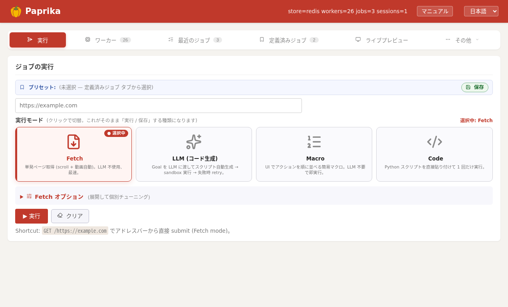
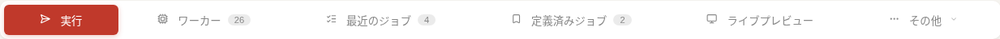
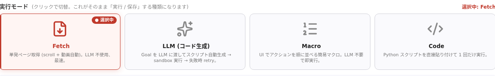
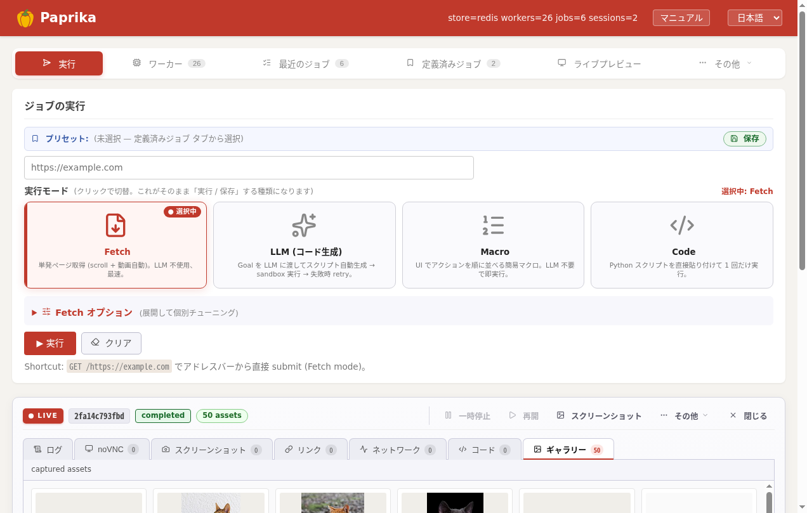
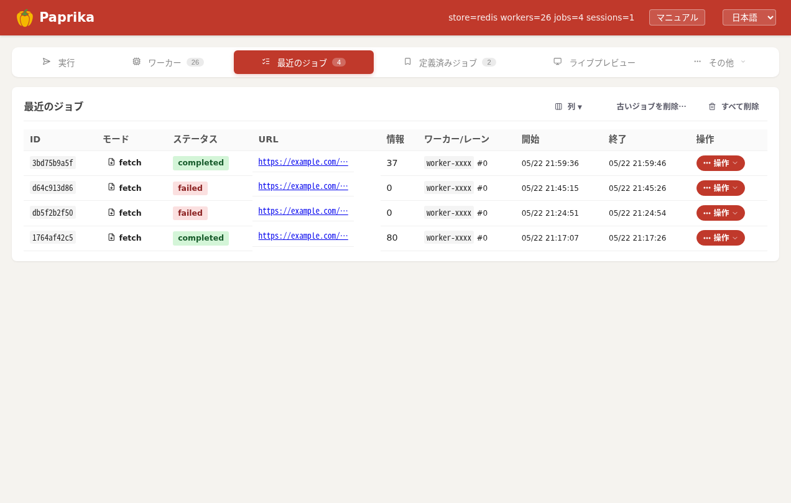
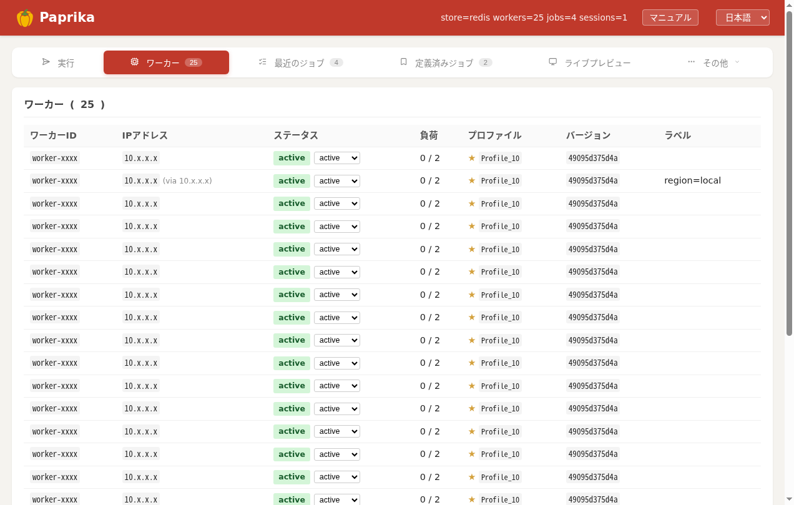
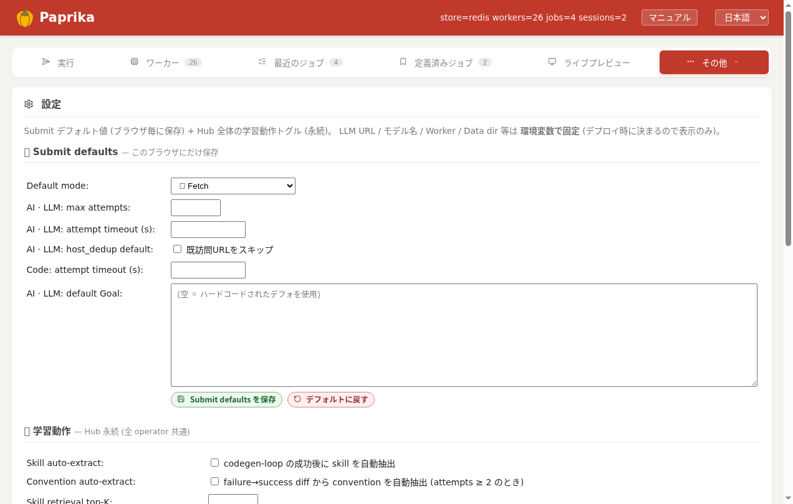

管理画面ガイド
ブラウザだけで Paprika を操作できる管理 UI の使い方。コードを書かずに URL を投げ、進行をライブで見て、収集物を確認できます。

実行（Submit）タブ。上の赤いヘッダー＋タブが管理画面。このドキュメントのヘッダーと同じ配色です。
開く
ブラウザで http://paprika.lan:8000（または http://<hub>:8000）を開きます。
赤いヘッダーと、その下のタブが管理画面です。右上の言語切替で日本語 / English を切り替えられます。
ヘッダー
画面上部に固定される赤いバー（このドキュメントのヘッダーと同じ配色）。
| 要素 | 意味 |
|---|---|
| Paprika | ロゴ。クリックで Submit へ戻る |
| ステータス | ハブとの接続状態・エラー表示 |
| Manual | このマニュアル（GitHub Pages）を新規タブで開く |
| 言語切替 | 日本語 / English |
タブ一覧
ヘッダー直下のタブで画面を切り替えます。各タブはURL の #hash に対応（例 /#jobs）し、ブックマーク・直リンク可能。数字バッジは件数。

| タブ | 何ができるか |
|---|---|
| 実行（Submit） | URL とモードを指定してジョブを投入。既定の入口 |
| ワーカー（Workers） | 接続中ワーカーの一覧・状態・レーン使用状況 |
| 最近のジョブ（Recent jobs） | 投入済みジョブの一覧・状態・成果物への導線 |
| 定義済みジョブ（Preset job） | よく使う実行設定を保存して再投入 |
| ライブプレビュー（Live preview） | 全レーンのライブ画面をタイル表示 |
| 「…その他」メニュー内（高度な設定） | |
| Sessions | 生きているセッション（対話的ブラウザ）一覧 |
| Hosts | ホスト別の Cookie / ログイン情報の登録・管理 |
| Profiles | アップロード済み Chrome プロファイル |
| Extensions | ワーカー Chrome に入れる拡張 |
| AI Engines | LLM / VLM バックエンドの登録 |
| Skills / Conventions | codegen に注入する再利用スニペット / 運用ルール |
| Settings | ハブ全体の設定（最小ファイルサイズ等） |
実行（Submit）
URL を入れて 実行モードを選び 実行。投入すると下に Live パネルが開きます。モードは 4 つ：

実行モードのカードです。クリックで切り替えできます。
| モード | 内部 mode | 用途 |
|---|---|---|
| Fetch | fetch | 単発ページ取得。URL を開いて画像・動画・HTML を収集（LLM 不要・最速）。スクロール / 動画再生 / Cookie 注入などのオプションあり |
| LLM（コード生成） | codegen-loop | 自然言語のゴールを渡すと LLM がスクリプト生成 → sandbox 実行 → 失敗時リトライ |
| Macro | rerun | UI でアクションを順に並べる簡易マクロ。LLM 不要で即実行 |
| Code | rerun | paprika-client の Python を直接貼り付けて 1 回実行（過去ジョブの再実行も） |
CSS セレクタが効かない画面を「見て」操作させたいときは、Fetch オプションや LLM の設定から vision-agent を選べます。
0 = フィルタ無効。Live パネル
ジョブ投入直後や「watch live」から開く、実行中のジョブを観察するパネル。上部に LIVE バッジ・ジョブID・ステータス・収集数、その下のタブで見方を切り替えます。

Live パネルの「ギャラリー」タブ。収集した画像のサムネイルが並ぶ（例: Wikipedia 記事の画像 50 点）。
| タブ | 内容 |
|---|---|
| ログ | ライブログ（tail -f 相当）。paprika-client の各操作と結果が 1 行にまとまって流れる |
| noVNC | 実行中の実ブラウザをそのまま表示・手動操作も可能 |
| スクリーンショット | 各ステップで撮られたスクショ |
| リンク | ページから抽出した <a href> 一覧 |
| ネットワーク | 読み込んだメディアのネットワークログ |
| コード | codegen が生成した script.py / 各 attempt |
| ギャラリー | 収集された画像・動画のサムネイル |
最近のジョブ（Recent jobs）
投入済みジョブの一覧。各行に id / モード / ステータス / URL / 収集数 / 開始・終了 / ワーカー・レーン / 操作メニュー。

最近のジョブ。※このスクショは公開用に IP / URL を伏字化しています。
- columns ボタンで表示する列を選択（開始/終了時刻・所要などを出し入れ）
- 行の actions メニュー: watch live / live log / screenshots / 結果 JSON / 再実行 / 削除 など
- cleanup old… で古い完了ジョブを一括削除（最新は常に保持）
- ステータス:
queued/running/completed/failed/cancelled
ワーカー（Workers）
接続中のワーカー一覧。各ワーカーのレーン数・実行中ジョブ数・状態（active / drain / standby）が見えます。 レーンが空いているワーカーがいないと新規ジョブは投入できず 503（混雑時）になります。詳しい挙動は サーバー → 更新・フリート運用。

ワーカー一覧。※公開用に ワーカーID / IP を伏字化しています。
Live preview
フリート全レーンのライブ画面をタイル表示。状態は 3 色：
- ● RUNNING — スクリプト操作 / noVNC 操作が進行中
- ● KEEPALIVE — 生きているが誰も触っていない
- IDLE — 閉じられ回収済み（レーン解放）
レジストリ各種
| タブ | 使いどころ |
|---|---|
| Hosts | 会員サイトのログイン後 Cookie を保存。以後の収集で cookies_from 指定すれば自動再利用。自動再ログインのレシピも登録可 |
| Profiles | ログイン済み Chrome プロファイルをアップロードし use_profile で利用 |
| Extensions | uBlock 等の拡張をワーカー Chrome に配布 |
| AI Engines | codegen / vision に使う LLM・VLM の接続先を登録 |
| Skills / Conventions | codegen が再利用するスニペット / 「やってはいけない」運用ルール。失敗パターンを登録すると次回 prompt に注入される |
| Settings | 最小ファイルサイズなどハブ全体のデフォルト |

Settings タブです。「…その他」メニューから開けます。Submit のデフォルトや codegen の学習動作を設定できます。